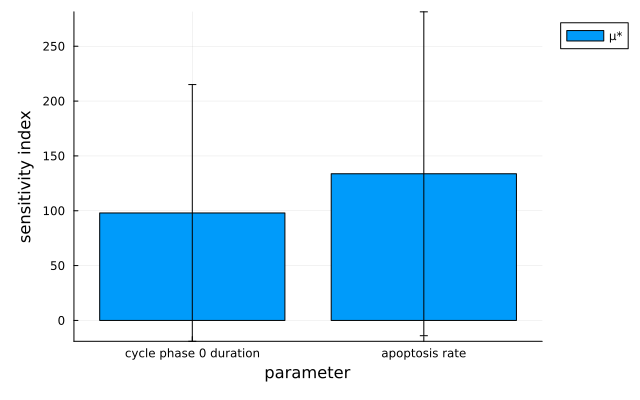
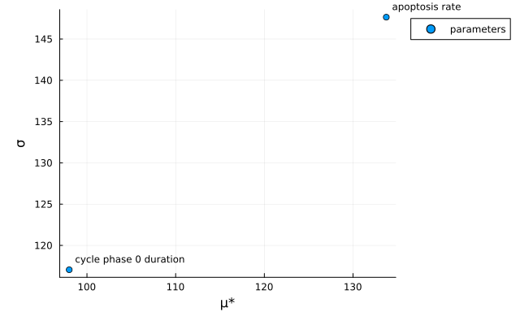
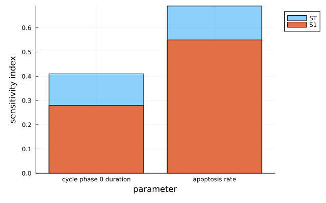
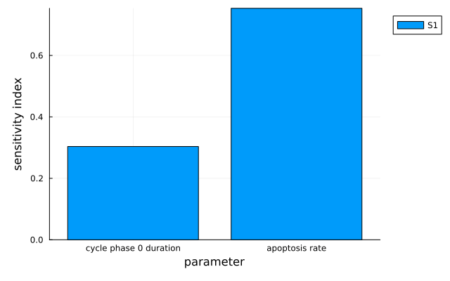

Sensitivity analysis
Find out which parameters your model's output actually depends on, reusing simulations you have already run.
Supported sensitivity analysis methods
Three methods are available. Each is a constructor you pass to run along with the model and the parameters to vary.
| Method | Gives | Notes |
|---|---|---|
MOAT | One screening sensitivity (µ*, σ) per parameter | Cheapest; intuitive rather than rigorous |
Sobolʼ | First-order and total-order variance indices | Most rigorous, most simulations |
RBD | First-order indices only | Far cheaper than Sobol', one monad per design point |
Morris One-At-A-Time (MOAT)
MOAT trades theoretical rigor for an intuitive sensitivity estimate. It samples parameter space at n points; from each, it varies one parameter at a time and records the change in output, then aggregates those changes into a sensitivity for each parameter.
Sampling is by Latin Hypercube Sampling (LHS), using each bin's centerpoint as the base point. add_noise=true picks a random point within the bin instead. MOAT furthermore uses an orthogonal LHS where it can: if n=k^d for some integer k — n the requested number of base points, d the number of parameters varied — the LHS will be orthogonal. For example n=16 and d=4 give k=2. Set orthogonalize=false to prevent that.
MOAT() # will default to n=15
MOAT(8) # set n=8
MOAT(8; add_noise=true) # use a random point in the bin, not necessarily the center
MOAT(8; orthogonalize=false) # do not use an orthogonal LHS (even where one is possible)Sobol'
First-order index methods: :Sobol1993, :Jansen1999, :Saltelli2010 (default :Jansen1999). Total-order: :Homma1996, :Jansen1999, :Sobol2007 (default :Jansen1999). The rasp symbol ʼ avoids a clash with the Sobol module — type \rasp then tab in VS Code — and SobolMM is the plain-ASCII alias.
The Sobol' method quantifies sensitivity from the variance of the model output. It uses a Sobol' sequence — a deterministic low-discrepancy sequence that fills the unit hypercube very evenly, approximating quantities like integrals with far fewer points than random sampling. The sequence is built around powers of 2, so n=2^k (or ±1) gives the best results. See SobolVariation for how PhysiCellModelManager.jl uses the sequence and how to control it.
If the extremes of your distributions (where the CDF is 0 or 1) are non-physical — an unbounded normal distribution, say — consider n=2^k-1 to pick a subsequence that excludes them: n=7 gives [0.5, 0.25, 0.75, 0.125, 0.375, 0.625, 0.875]. To include the extremes, use n=2^k+1: n=9 gives [0, 0.5, 0.25, 0.75, 0.125, 0.375, 0.625, 0.875, 1].
Sobolʼ(9)
Sobolʼ(9; skip_start=true) # skip to the odd multiples of 1/32 (smallest one with at least 9)
SobolMM(9) # same constructor, no rasp requiredRandom Balance Design (RBD)
RBD uses a random design matrix (like Sobol') and a Fourier transform (as in the FAST method). For n design points it runs n monads, then rearranges the outputs so each parameter in turn varies along a sinusoid, and estimates first-order indices via Fourier transforms. It looks up to the 6th harmonic by default (num_harmonics).
By default the Sobol' sequence picks the design points, and n must then be within 1 of a power of 2 — 7, 8 or 9, say. This is a requirement, not a preference: a value further away raises an error at construction rather than falling back. A half-period of a sinusoid is used when converting the design points into CDF space. use_sobol=false lifts the restriction: n is then unconstrained, random permutations of n uniformly spaced points are used in each parameter dimension, and a full period of a sinusoid is used for the CDF conversion.
Choosing n=2^k - 1 or n=2^k + 1 leaves you well-positioned to increment k and rerun for more accurate results, because PhysiCellModelManager.jl starts from the beginning of the Sobol' sequence to cover those n points and no run is repeated. With n=2^k it instead picks the n odd multiples of 1/2^(k+1), which are not reused when k is incremented.
RBD(9) # will use a Sobol' sequence with elements chosen from 0:0.125:1
RBD(32; use_sobol=false) # opt out of using the Sobol' sequence
RBD(22; use_sobol=false) # `n` need not sit near a power of 2 once you opt out of Sobol'
RBD(32; num_harmonics=4) # will look up to the 4th harmonic, instead of the default 6thSetting up a sensitivity analysis
Simulation inputs
Use the convenience constructors UniformDistributedVariation and NormalDistributedVariation, or any d::Distribution directly. All variation types accept name=..., used in the scheme DataFrame/CSV headers; inspect the effective name with variationName.
A sensitivity analysis takes the same inputs as a sampling: an inputs::InputFolders naming the data/inputs/ folders that define your model, and an evs::Vector{<:ElementaryVariation} of the parameters to analyze with their ranges or distributions. These are usually DistributedVariations, so a continuum of values can be tested.
CoVariations draw all member parameters from the same CDF value; pass flip to negatively correlate some of them. For more complex relationships, use LatentVariations to transform latent variables into the parameters of interest.
dv = DistributedVariation(xml_path, d) # any d::Distribution
UniformDistributedVariation(xml_path, 720, 2880) # (lower, upper)
NormalDistributedVariation(xml_path, 1e-3, 1e-4; lb=0) # (mean, std), truncated at lbSensitivity functions
Any number of them may be given at the start of the analysis. finalPopulationCount returns a dictionary of each cell type's final count from a Simulation, so one cell type's count is one lookup away.
f(sim::Simulation) = finalPopulationCount(sim)["cancer"]Running the analysis
run(method, inputs, evs; functions=...) launches the design and returns the sampling object the post-processing step works on. A reference::AbstractMonad or a StudySpec may stand in for inputs. A Dict-valued QoI gives one analysis per key, labeled "<qoi name>.<key>".
config_folder = "default"
custom_codes = "default"
inputs = InputFolders(config_folder, custom_codes)
n_replicates = 3
evs = [NormalDistributedVariation(configPath("cancer", "apoptosis", "rate"), 1e-3, 1e-4; lb=0),
UniformDistributedVariation(configPath("cancer", "cycle", "duration", 0), 720, 2880)]
method = MOAT(15)
f(sim::Simulation) = finalPopulationCount(sim)["cancer"]
sensitivity_sampling = run(method, inputs, evs; n_replicates=n_replicates, functions=[f])
# A Dict-valued QoI: one analysis per cell type, labeled population_count.<cell_type>
run(method, inputs, evs; n_replicates=n_replicates, functions=[populationCountQoI()])
# Named parameters, so the scheme CSV and the plots read as something other than XML paths
evs = [NormalDistributedVariation(configPath("cancer", "apoptosis", "rate"), 1e-3, 1e-4; lb=0, name="Apoptosis rate"),
UniformDistributedVariation(configPath("cancer", "cycle", "duration", 0), 720, 2880; name="Cycle duration")]What run returns. A subtype of GSASampling, the abstract type for global sensitivity analysis results: MOATSampling, SobolSampling, or RBDSampling, one per method. The methods themselves share the abstract supertype GSAMethod, whose subtypes are MOAT, Sobolʼ and RBD. The concrete sampling type is the pairing — it is what calculateGSA! dispatches on to decide how the indices are computed, and what the plot recipes dispatch on to decide how they are drawn. It also decides how the scheme is saved. A new method is therefore a GSAMethod subtype, a matching GSASampling subtype, and the calculateGSA! method that joins them.
Post-processing
PhysiCellModelManager.calculateGSA! computes sensitivity indices for further measurements on a sampling you already ran, and files them in sensitivity_sampling.results under the label of the measurement that produced them — its name, or "<name>.<key>" per key for a Dict-valued one.
Results accumulate on the sampling, and a measurement whose label is already present is skipped: reusing the name f from the run above would do nothing at all, silently. Those stored results are what makes adding one more quantity cheap — see Post-processing for where computed quantities are kept. Pass recompute=true to evaluate again rather than reuse them; it has to be explicit, because redefining a function's body leaves it indistinguishable from the one already evaluated.
The method also determines how the sensitivity scheme is saved. After running the simulations, PhysiCellModelManager.jl writes a CSV in data/outputs/samplings/$(sampling.id) named after the method — moat_scheme.csv, sobol_scheme.csv, or rbd_scheme.csv. Parameter columns in this CSV use the latent parameter names for the sampling design, which include user-specified variation names when provided. The simplest way to reload the sampling in a new Julia session is to re-run the code that generated it: so long as use_previous is true, the previous results are reused.
g(sim::Simulation) = finalPopulationCount(sim)["default"] # a *new* measurement, under a new name
calculateGSA!(sensitivity_sampling, g)
println(sensitivity_sampling.results["f"])gsaLabels(sensitivity_sampling) lists the labels present, sorted — one label is not one functions= entry, since a Dict-valued measurement contributes one per key. It is public in ModelManager but not exported, so it needs the prefix: ModelManager.gsaLabels(sensitivity_sampling), e.g. ["population_count.cancer", "f"]. Each label indexes sensitivity_sampling.results.
Plotting
Requires a Plots.jl backend (using Plots). Every sampling has a plot recipe; a positional symbol picks the style where there is more than one, and parameters= restricts the x-axis to some parameters, drawn in the order given — anything select accepts on a DataFrame works. The figures below come from the template project, varying a cycle phase duration and the apoptosis rate with the final cell count as the measurement.
plot(moat_sampling) # µ* per parameter (the default, :bar)
plot(moat_sampling; show_sigma=true) # σ as whiskers on the µ* bars
plot(moat_sampling; parameters=["Apoptosis rate"]) # a subset, in this order
plot(moat_sampling, :scatter) # the µ*–σ screening scatter
plot(moat_sampling, :violin) # elementary-effect distributions; needs StatsPlots
plot(sobol_sampling) # first-order S1 bars with total-order ST behind them
plot(sobol_sampling; show_ST=false) # S1 only
plot(rbd_sampling) # first-order bars
Decided: generate the figures from the template project, whose config parameters govern the cell count directly and whose simulations take seconds, rather than from immune_sample, where the rates are set by custom code so varying them in the XML would draw indices of nothing. The PNGs are committed and regenerated by hand, because the docs CI has no PhysiCell.
Open: the Sobolʼ bars are illustrative numbers pushed through the real recipe. Sobolʼ(16) — 40 simulations — estimated ST < S1, which no total-order index is, and the design that respects it, Sobolʼ(64), is 238 simulations for a picture that only shows the plot.